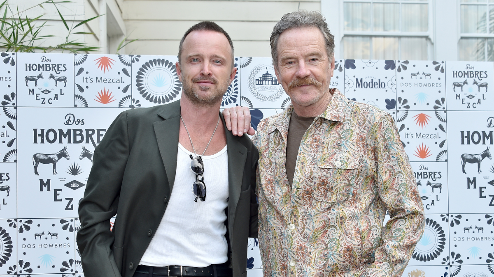

ORIGINES DE BREAKING BAD
La serie fue creada por Vince Gilligan, quien tuvo una idea bastante particular: tomar el concepto clásico de evolución de personaje… y hacerlo al revés.

Según Gilligan, quería contar la historia de alguien
que pasa de ser el “bueno” al “villano”. No un giro repentino, sino
un proceso gradual, casi imperceptible al principio. Una caída
en cámara lenta.
La idea principal gira en torno a la transformación personal de Walter White,
pero también
toca temas como:
- La frustración acumulada
- El ego reprimido
- El poder como droga emocional
- Las consecuencias inevitables de las decisiones
Todo esto ambientado en un entorno realista donde cada acción tiene peso. Acá no hay magia narrativa que te salve: lo que haces, te persigue.